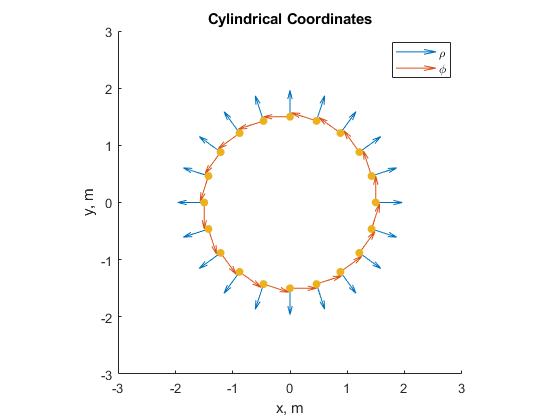

Contents
Superposition of vector fields
x = linspace(0, 2, 21);
y = linspace(0, 2, 21);
[X, Y] = meshgrid(x, y);
A = 1;
B = 2;
Xa = -1;
Xb = 3;
Ea = A./(X - Xa);
Eb = B./(X - Xb);
figure
quiver(X ,Y ,Ea , 0*X,'b')
xlabel('x, m')
xlim ([0, 2])
ylabel('y, m')
ylim([0, 2])
title('E_a')
axis square
figure
quiver(X, Y, Eb, 0*X, 'r')
xlabel('x, m')
xlim ([0, 2])
ylabel('y, m')
ylim([0, 2])
title('E_b')
axis square
figure
quiver(X, Y, Ea+Eb, 0*X, 'c')
xlabel('x, m')
xlim ([0, 2])
ylabel('y, m')
ylim([0, 2])
title('E_a + E_b')
axis square
xticks(0: 0.5 :2)
figure
Eb = 0.739 ./(X-Xb);
quiver(X, Y, Ea + Eb, 0*X, 'b')
xlabel('x, m')
xlim ([0, 2])
ylabel('y, m')
ylim([0, 2])
title('E_b + E_a = 0 @ Xo = 1.3')
axis square
xticks(0 :0.5: 2)
Cylindrical Coordinates
figure
phi = (0: pi/10: 2*pi);
x = 1.5*cos(phi);
rhox = cos(phi);
phix = -sin(phi);
y = 1.5*sin(phi);
rhoy = sin(phi);
phiy = cos(phi);
hold on
quiver (x, y, rhox, rhoy, 0.5)
quiver (x, y, phix, phiy, 0.5)
scatter(x, y,'filled');
title('Cylindrical Coordinates')
xlabel('x, m')
xlim([-3, 3])
ylabel('y, m')
ylim([-3, 3])
legend('\rho', '\phi')
axis square
hold off

Visualizing Divergence
x = linspace(0, 3.1, 32);
y = linspace(0, 1, 31);
[X, Y] = meshgrid(x, y);
A = sin(X);
dA = cos(X);
B = A;
dB = 0*Y;
figure
hold on
p = pcolor(X ,Y, dA);
set(p, 'EdgeColor', 'none');
cbh = colorbar;
cbh.Ticks = linspace(-1, 1, 5);
quiver(X, Y, A, 0*X,'black');
title('Visualizing Divergence: A')
ylabel('y, m')
xlabel('x, m')
xlim([0,3.1])
ylim([0,1])
yticks(0:(1/5):1)
legend('\nabla\cdotA', 'A')
hold off
figure
hold on
pcolor(X ,Y, dB);
shading flat
cbh = colorbar;
cbh.Ticks = linspace(-1, 1, 5);
quiver(X, Y, 0*X, B,'black');
title('Visualizing Divergence: B')
ylabel('y, m')
xlabel('x, m')
xlim([0,3.1])
ylim([0,1])
yticks(0: .2 :1)
legend('\nabla\cdotB', 'B')